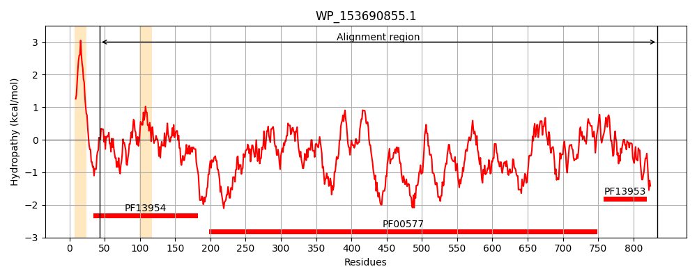
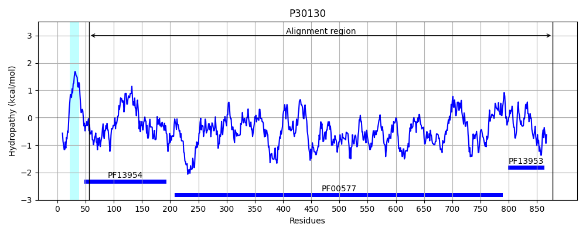
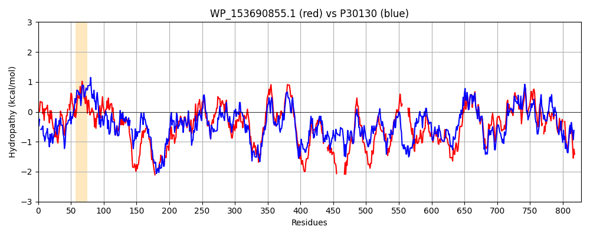

Hit Accession: P30130
Hit TCID: 1.B.11.3.9
Hit Description: gnl|BL_ORD_ID|9707 gnl|TC-DB|P30130|1.B.11.3.9 Outer membrane usher protein fimD OS=Escherichia coli (strain K12) GN=fimD PE=1 SV=2
Mach Len: 828
e:0.000000
Query TMS Count : 2
Hit TMS Count: 1
TMS-Overlap Score: 0.800000
Predicted Substrates:None
BLAST Alignment:
Score: 1811 , Bit scores: 702 bits, E-value: 0.0e+00, Alignment length: 828, Percentage identity: 45
Query: 43 DSPGQAVVDLSAFSEADGQLPGTYRVTVYVNGEQQGEAQDIAFVAG-ADKKLTAQLTPAMLKAWGVNTAAFPALTALPADKPLEDIGRYIPIASSELRFSKLQLNLSIPQAAMSATARGWVDPSEWDEGVSAALLNYNLSGSNTWRDGENGSDDNYYANLQSGLNLGAWRLRNYSTWNY---DEDNGSH--WDSVNTYLQRDIQRLQGQLTLGDSYTPSDIFDSVQFRGAQLASDDNMLPDSLRGFAPIIRGIAQSNAQVTIKQNGYTIYQSYVAPGAFAISDLYPTSGSGDLEVTIKEADGSERTFIQPFSAVPIMQREGRLKYALTAGKYRSGNSDSDEPEFGQITAIYGLPHAITIYGGTLYSEDYQSGAAGLGFGLGELGSVSADITAAHTTLNNDETHDGQSYRVQYSKDFQATDTSFTLAAYRYSTEGFY-----TFQEANDLRSDSDDG-----------WRLTYNKRQKLQLDLTQSIGSYGSFFVSGYQQDYWHEDGYERTLSTGWNGNINGISYSVSYSYSDYPDSTQPADQRLAFSIQVPLSRFM--------PNAWASYSVNTAKHGDTRQQVGLNGTALADNNLSYSLQQSYTNHGVGGSGN---INADYKGGQGEITGSYNYDDDMQQVNYGLKGGIVVHPHGITLSQPLGDSLAIVKAPGADDAKVQNNTGVYTDWRGYAVVPYVNAYRKNRIALDTSTLGDGVDIDTAVQTVTPTQGAVVMADFNTRVGRRVLMTLVYRGLPVPFGAQAKMEEG-GSGIVGDDGQVYLTGVPDEGEILVNWNGKQ--QCVVHYRLPENTGNAPVTETEQECR 834
D P QAV DLS F PGTYRV +Y+N +D+ F G +++ + LT A L + G+NTA+ + L AD + + A++ L + +LNL+IPQA MS ARG++ P WD G++A LLNYN SG N+ ++ G+ Y NLQSGLN+GAWRLR+ +TW+Y D +GS W +NT+L+RDI L+ +LTLGD YT DIFD + FRGAQLASDDNMLPDS RGFAP+I GIA+ AQVTIKQNGY IY S V PG F I+D+Y SGDL+VTIKEADGS + F P+S+VP++QREG +Y++TAG+YRSGN+ ++ F Q T ++GLP TIYGGT ++ Y++ G+G +G LG++S D+T A++TL +D HDGQS R Y+K + T+ L YRYST G++ T+ N ++ DG + L YNKR KLQL +TQ +G + ++SG Q YW + G N I++++SYS + + DQ LA ++ +P S ++ +A ASYS++ +G G+ GT L DNNLSYS+Q Y G G SG+ +Y+GG G Y++ DD++Q+ YG+ GG++ H +G+TL QPL D++ +VKAPGA DAKV+N TGV TDWRGYAV+PY YR+NR+ALDT+TL D VD+D AV V PT+GA+V A+F RVG ++LMTL + P+PFGA E SGIV D+GQVYL+G+P G++ V W ++ CV +Y+LP + +T+ ECR
Sbjct: 56 DDP-QAVADLSRFENGQELPPGTYRVDIYLNNGYMA-TRDVTFNTGDSEQGIVPCLTRAQLASMGLNTASVAGMNLL-ADDACVPLTTMVQDATAHLDVGQQRLNLTIPQAFMSNRARGYIPPELWDPGINAGLLNYNFSG-NSVQNRIGGNSHYAYLNLQSGLNIGAWRLRDNTTWSYNSSDRSSGSKNKWQHINTWLERDIIPLRSRLTLGDGYTQGDIFDGINFRGAQLASDDNMLPDSQRGFAPVIHGIARGTAQVTIKQNGYDIYNSTVPPGPFTINDIYAAGNSGDLQVTIKEADGSTQIFTVPYSSVPLLQREGHTRYSITAGEYRSGNAQQEKTRFFQSTLLHGLPAGWTIYGGTQLADRYRAFNFGIGKNMGALGALSVDMTQANSTLPDDSQHDGQSVRFLYNKSLNESGTNIQLVGYRYSTSGYFNFADTTYSRMNGYNIETQDGVIQVKPKFTDYYNLAYNKRGKLQLTVTQQLGRTSTLYLSGSHQTYWGTSNVDEQFQAGLNTAFEDINWTLSYSLTKNA-WQKGRDQMLALNVNIPFSHWLRSDSKSQWRHASASYSMSHDLNGRMTNLAGVYGTLLEDNNLSYSVQTGYAGGGDGNSGSTGYATLNYRGGYGNANIGYSHSDDIKQLYYGVSGGVLAHANGVTLGQPLNDTVVLVKAPGAKDAKVENQTGVRTDWRGYAVLPYATEYRENRVALDTNTLADNVDLDNAVANVVPTRGAIVRAEFKARVGIKLLMTLTHNNKPLPFGAMVTSESSQSSGIVADNGQVYLSGMPLAGKVQVKWGEEENAHCVANYQLPPESQQQLLTQLSAECR 878 | Protein Hydropathy Plots: |
|---|
|  |  |
Pairwise Alignment-Hydropathy Plot:
|
|---|
|  |